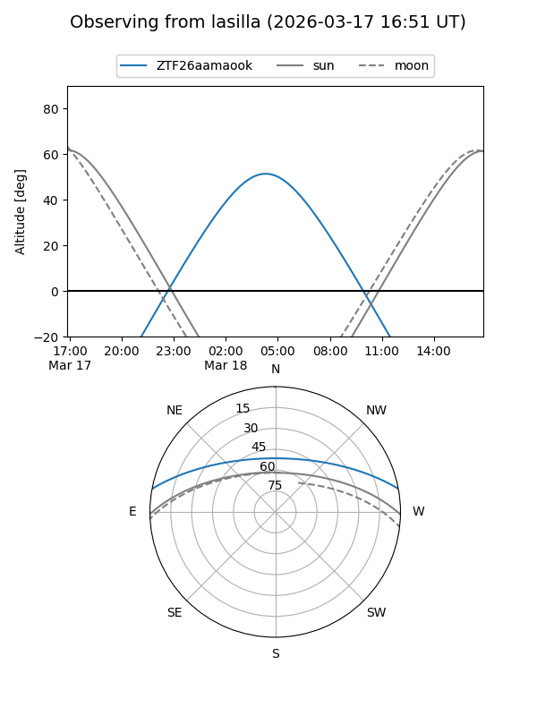
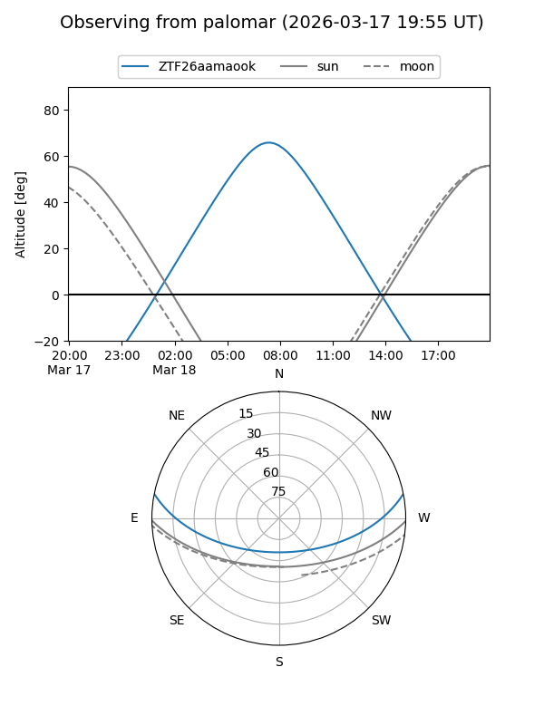

ZTF26aamaook
Target ZTF26aamaook at 2026-03-18 11:58
Aliases and brokers:
FINK: link
Lasair: link
ALeRCE: link
alt names
ZTF26aamaook (ztf,fink_ztf)
Coordinates:
equatorial (ra, dec) = 169.0937,+9.41920
equatorial (HMS+DMS) = 11:16:22.49,+09:25:09.10
galactic (l, b) = (246.7211,+61.42127)
Flags:
Photometry:
last ztfg=17.56, ztfr=16.90
1 ztfg, 1 ztfr detections
Lightcurve
Visibility


Additional plots